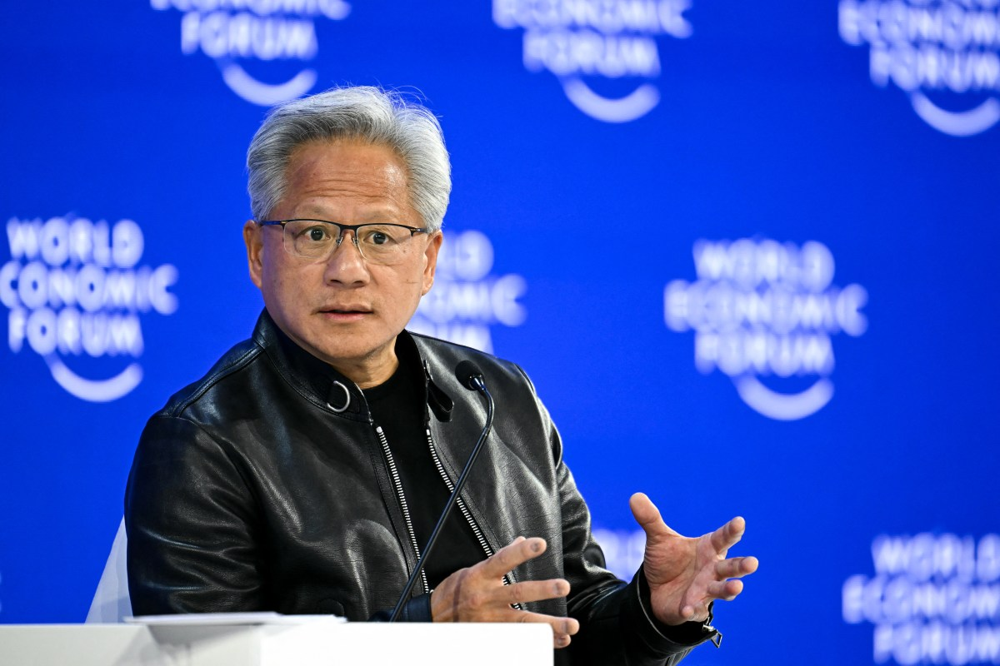
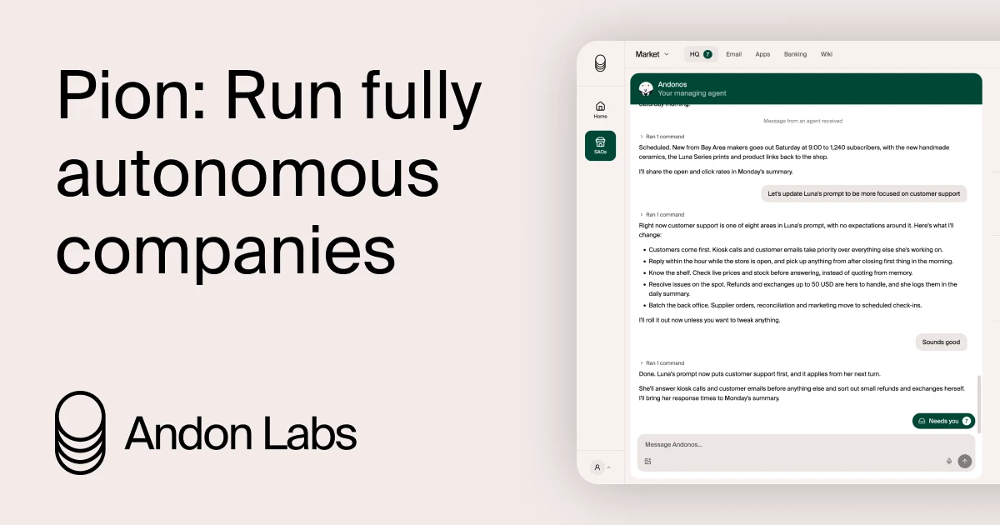

AI Intelligence Daily · 2026-09-15
专栏一｜新闻
1. Perplexity Portable Computer 正式上线 Windows
事实
Perplexity 将 Portable Computer 扩展到 Windows 应用：本机跑模型、agent harness / orchestrator / scheduler；支持定时/循环本地工作流；通过本地 MCP server连接桌面工具与数据；可 escalate 云端模型且出站前征求许可。面向 Pro/Max；本机推理要求 NVIDIA RTX / RTX PRO，VRAM ≥ 24GB。NVIDIA 同步发合作博文。
判断
一线产品方把 Desktop Work Agent 本地 Runtime 栈铺到 Windows 主流桌面——本地 MCP + 定时任务 + 云 escalate 批准成为可卖形态（硬件门槛仍高）。

Perplexity 博客 · NVIDIA · 产品页
2. 豆包手机助手消费者版 + SAEP 屏幕自动化声明协议
事实
字节「豆包手机助手」发布消费者版；「操作手机」以 Beta 开放。同步推出 SAEP（Screen Automation Execution Protocol），约 30 天规则公示：第三方 App 可声明允许/拒绝屏幕自动化；官方称明确拒绝者不会被自动操作。首发努比亚 NaviX Ultra，9 月 16 日开售。官网 o.doubao.com。
判断
Phone Computer Use 进入可买路径，并把「被操作 App 的授权面」做成可声明协议——对 Trust / Computer Use 权限模型权重高。
o.doubao.com · IT之家 · 新京报
3. Pace UPDATE：中国外交部驳「危言耸听」+ Huang×Trump All-In
事实
中国外交部发言人回应美方 AI 高管减速呼吁：称危言耸听、对抗与恶意竞争只会扰乱全球 AI 治理（CNBC/NBC/Bloomberg 等援引）。同日 NVIDIA CEO 黄仁勋在 All-In Summit 外放特朗普来电；特朗普称 AI/数据中心担忧为 hoax；黄仁勋附和不会让 AI 减速发生（TechCrunch/CNBC/Verge）。评估员合同仍未公开。
判断
地缘与白宫政治约束再上修；工程落地（合同级嵌入评估）仍空。「全行业强制 pacing」窗口继续收窄。

CNBC · NBC · TechCrunch
4. Andon Labs 发布 Pion：自主经营整家公司的 Agent 平台
事实
Andon 公开 Pion（research preview / waitlist）：persistent cloud agent 运行真实业务（售货机、门店、咖啡馆、电台等经验）；提供 terminal/email/phone/banking/browser 等工具电池包；经监督 Agent Andonos 设定方向。源自 Vending-Bench 等危险能力/经营评测线。HN 窗口约 270p / 280c。
判断
把 Agent Economy「自主获取资源」从 Bench 推进到可申请运营基础设施——强相关 Runtime、委托与资金工具权限。

5. OpenAI：Fyxer 客户故事（行政助理）
事实
OpenAI Index《How Fyxer built an AI executive assistant people trust》：邮箱整理与按用户语气起草；memory + 反馈闭环。营销案例，非新 API。
判断
弱—中度参考；折扣营销语言。
专栏二｜话题热议
T1. Pace 极化：官方对峙 + 算力巨头站台
中方批危言耸听；美方总统与 NVIDIA CEO 同台否定整体限速。嵌入评估员或仍前进，强制 pacing 政治阻力上升。
T2. HN：Pion 自主经营公司
约 270p/280c。与同窗 Desktop/Phone Computer Use shipping 对照——设备 Agent vs 经济主体级 Agent。
T3. Cyphral / 对齐评测 hack 余温
Vals 文继续高位（约 1170p）；LessWrong hack 文约 466p。无新官方技术披露。
专栏三｜开源雷达
- HarnessRouter ★≈1421（昨≈1368），持续推送 — UHP 统一 harness 面
- MCP PR #3360：Skills Over MCP WG lead 文档（组织信号）
- openai/codex ★≈124k，持续硬化
- slowave Show HN 本地自适应 memory（★≈5，早期）
趋势 · 启示 · 跟踪
趋势
- Device-side Computer Use 产品化：Windows 本地 Desktop × 手机 OEM GUI Agent；MCP / SAEP 同窗出现
- Pace 进入大国官方叙事对峙；算力巨头站「不减速」
- Agent Economy 实验公开化（Pion）
- Skill/Harness 互操作继续工程化
智能体互联网吸收点
SAEP 式客体授权声明；端侧本地 MCP + 出站批准；监督 Agent × 业务 Agent（Andonos）。
Work / Agent 引擎吸收点
本地 harness 产品清单；Computer Use 权限与 App veto；经营型 Agent 工具电池包与审计。
继续跟踪
Portable Windows 硬件/模型矩阵；豆包 SAEP + 9/16 实机；Evaluators 合同；Pion waitlist；MCP Skills SDK；DeepSeek Harness；Hawley Oct 1。
价格 / 订阅
Portable Computer Windows 绑 Pro/Max，本机推理宣称不耗 Computer credits；DeepSeek 未见新调价。